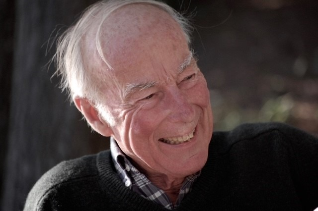

In between his more formal maritime paintings, Ian enjoyed experimenting with color, abstraction and different ways of capturing the places he visited. These informal landscapes, watercolor collages and sketches reflect a more spontaneous side of his work.
These paintings and sketches are being made available by Ian’s family, with the hope that they will find homes among friends, family and others who appreciate his work.
